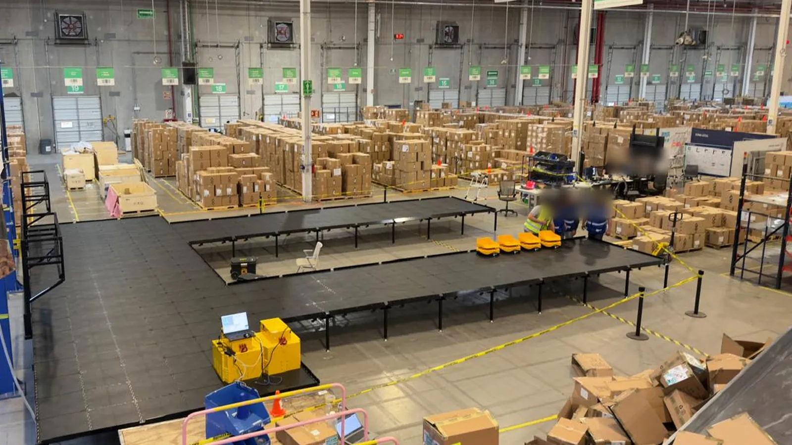
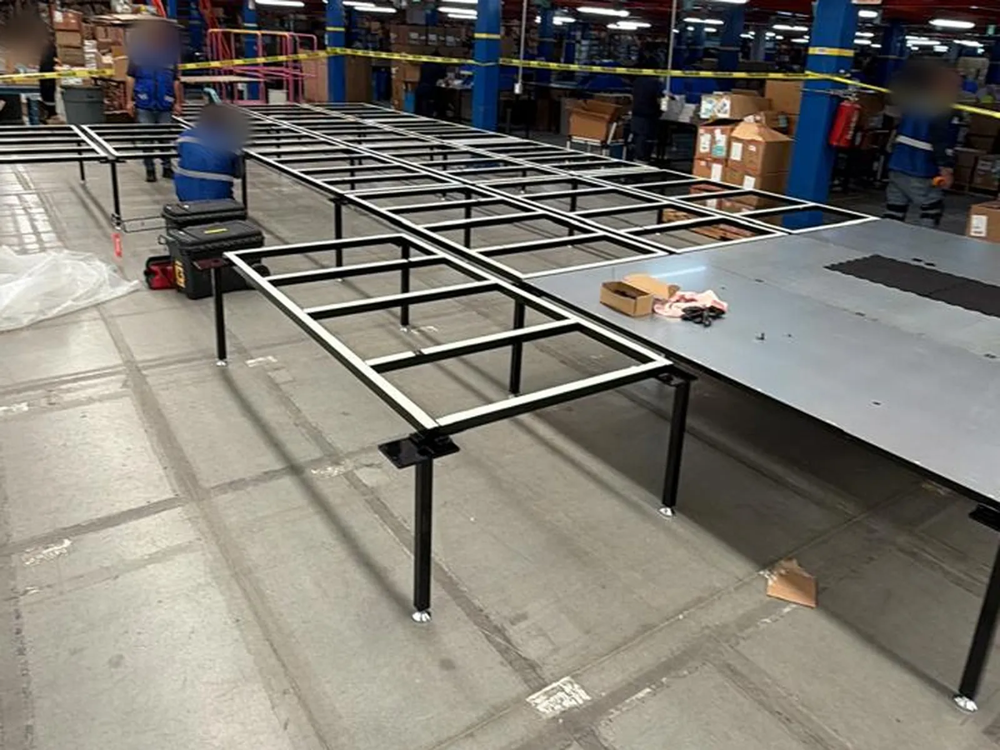
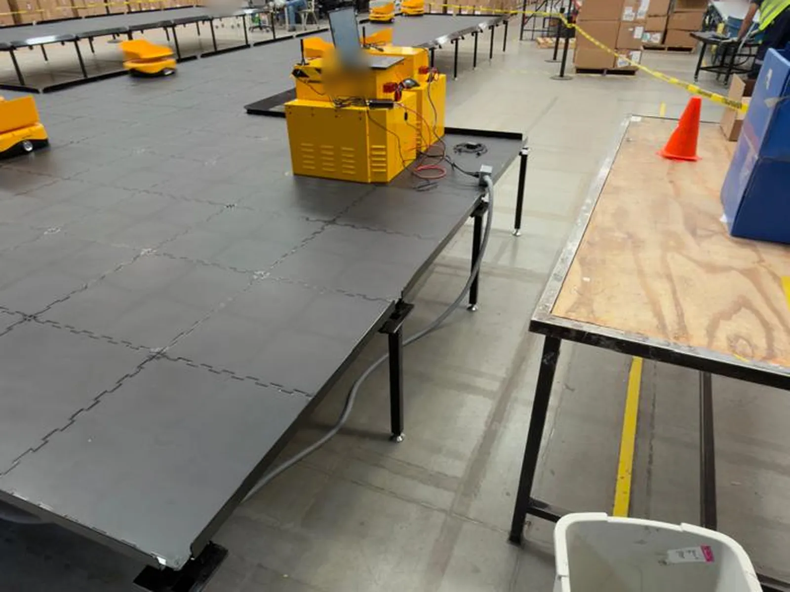
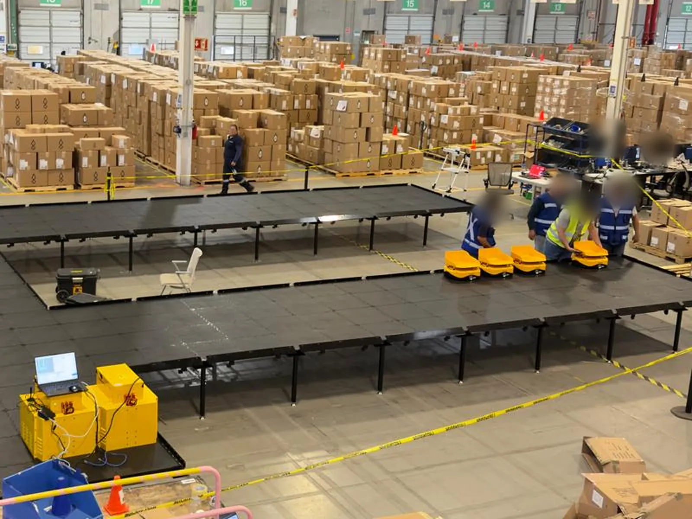
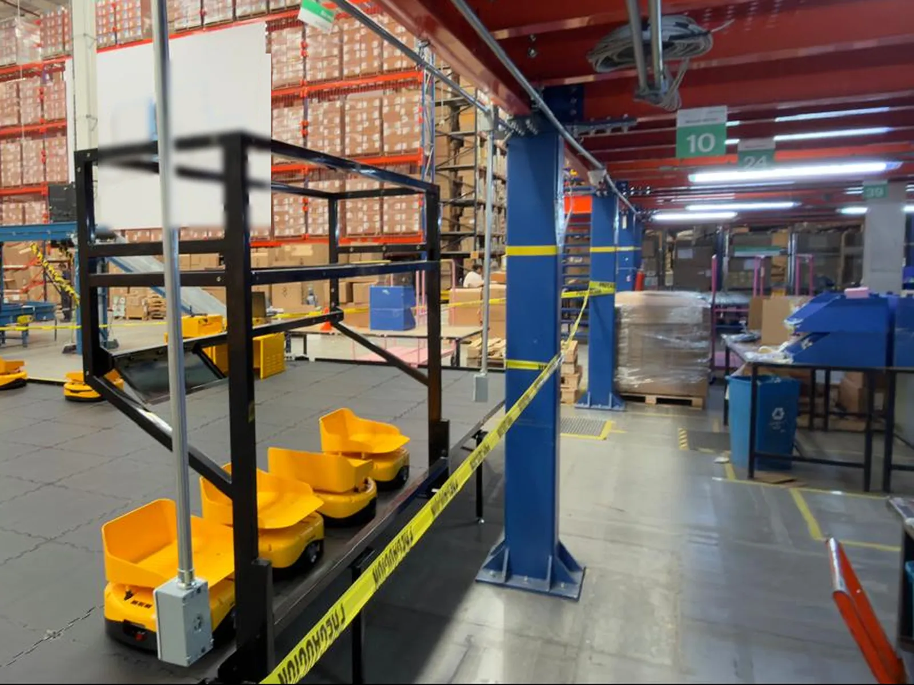
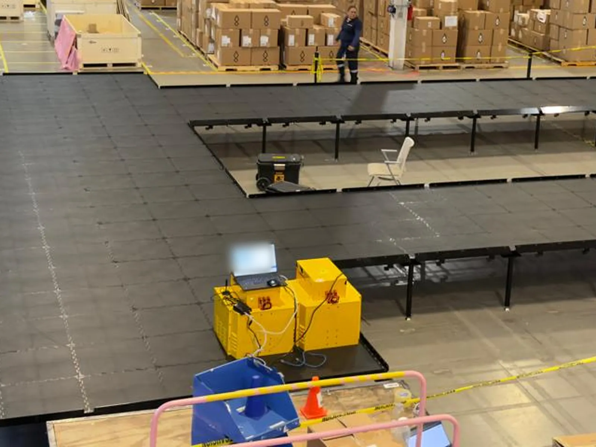

PRODUCTO · INSTALACIÓN
Instalación de sortation robótico en México.
Montamos la estructura modular de la pista, la superficie de rodamiento, las estaciones de inducción y de carga, y verificamos el recorrido antes del commissioning, en coordinación con el integrador.

CÓMO FUNCIONA
Clasificación con robots sobre una pista elevada.
- 01
Inducción
El operador coloca el paquete sobre la bandeja del robot en la estación de inducción.
- 02
Lectura
Se identifica el paquete y el sistema le asigna su destino.
- 03
Recorrido
El robot viaja sobre la pista elevada hasta el punto de descarga asignado.
- 04
Descarga y recarga
Inclina su bandeja y deja el paquete en el contenedor o rampa de destino; entre ciclos, los robots se recargan en la estación de carga.
QUÉ INSTALAMOS
Pista, estaciones y robots.
Sistemas tipo T-Sort y clasificadores robóticos sobre pista, bajo la dirección técnica del proveedor del sistema y conforme al layout aprobado.
- Estructura modular de pista: patas, travesaños, nivelación y anclaje
- Superficie de rodamiento con continuidad en las uniones
- Estaciones de inducción y de operador
- Rampas, bins y puntos de descarga
- Guardas, cercas y accesos
- Estación de carga de robots
- Montaje de dispositivos de campo
- Inspección y verificación del recorrido antes del commissioning
SECUENCIA DE INSTALACIÓN
Cinco pasos, en una instalación real.





¿Un sorter robótico en tu proyecto?
Cuéntanos destinos, estaciones y la fecha prevista de montaje.